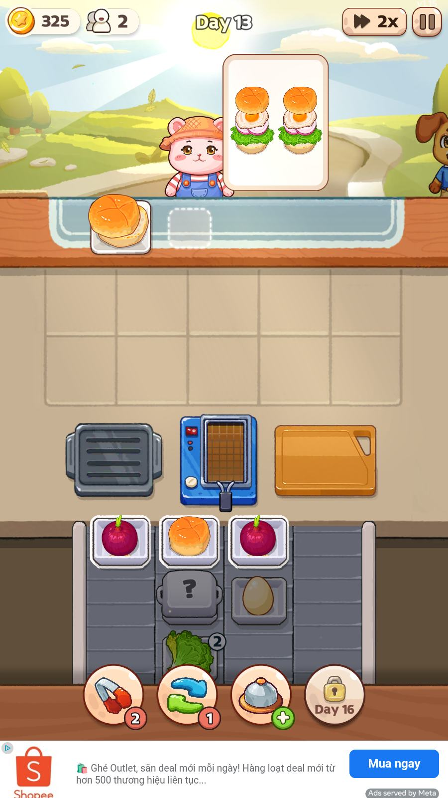
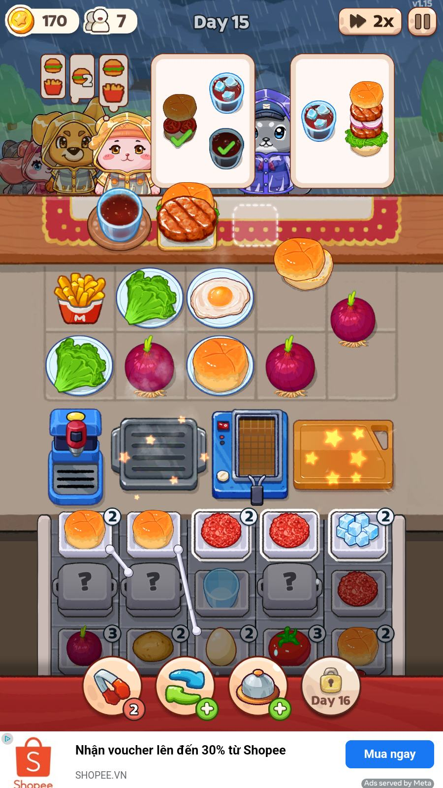
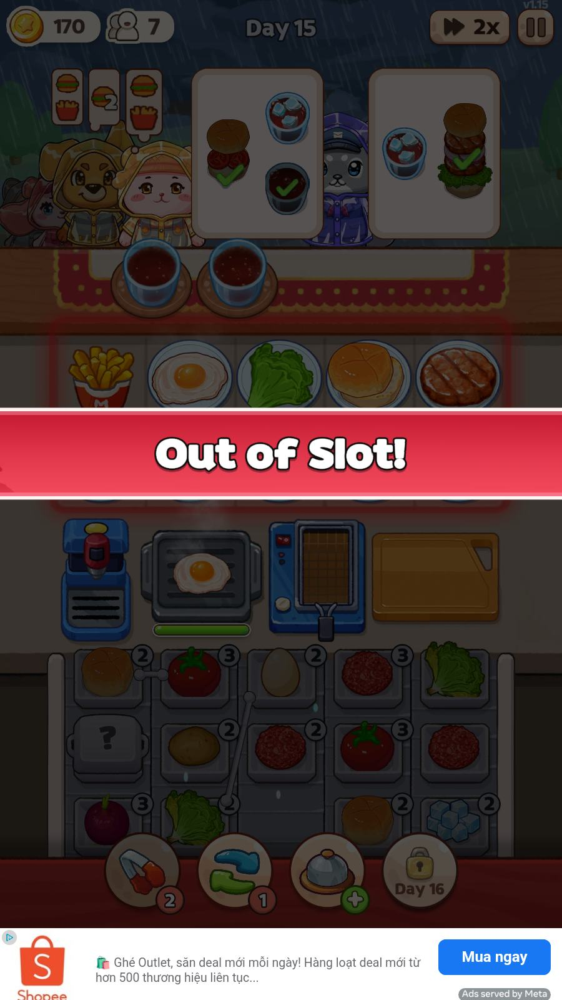
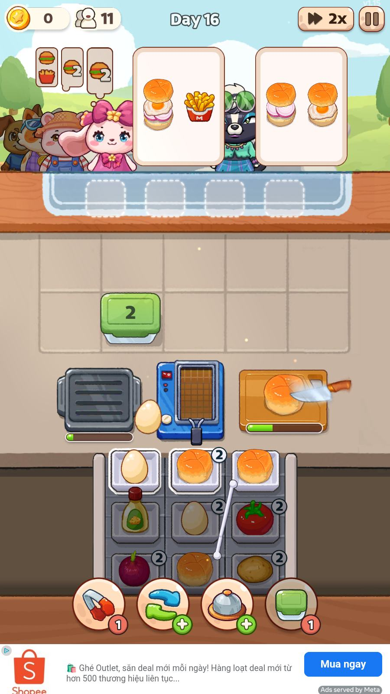

Đĩa, quầy và ô chứa
Mô tả
- Sau khi nấu, món đi tới quầy 4 ô hoặc nằm chờ ở lưới 10 ô. Hai khu này cộng lại là toàn bộ "chỗ chứa" của người chơi; hết chỗ thì thua (Out of Slots).
- Quầy chỉ mở đĩa mới khi có đơn đang mở dùng được món đó; món thừa nằm ở lưới và tự lên quầy khi có đĩa nhận (thử lại mỗi 0,2 giây).
- Đĩa tự ráp các lớp thành món (bun dưới, rồi từng lớp) và tự giao đúng khách; người chơi không chạm quầy (playtest: chạm khoai ở ô quầy không có tác dụng).
- Bản 1.15 thêm pre-merge ở dimsum và pizza (
usePreMergeShelfRules1): món bán thành phẩm lắp ngay trên lưới. - Đĩa bẩn có code (
dirtyStack5, booster Sweeper) nhưng không món nào khai đĩa bẩn nên không chạy trong 1.15; Stack Box là cách mới để giải phóng lưới.
Thiết kế chi tiết
Tóm tắt thiết kế
- APK Quầy cố định 4 ô ở mọi map; RC
serve_slot_config(max 5) không có hiệu lực. Bản playtest ghi "5 slot" ở Day 20 là nhầm (ảnh có 4 ô). - Code Quầy chỉ mở đĩa khi có đơn đang mở dùng món; món thừa đỗ ở lưới. Vì vậy lưới (10 ô) mới là "kho" thật, quầy chỉ là chỗ ráp.
- Playtest Đĩa tự ráp từng lớp (bun dưới) và tự giao; chạm quầy không có tác dụng.
- Code 1.15 thêm pre-merge trên lưới (dimsum, pizza) và Stack Box (hộp 5 ô, Day 16), hai cách mới để giảm áp lực ô.
- Code Đĩa bẩn và booster mở thêm ô quầy có code nhưng không chạy (không món nào khai đĩa bẩn;
booster_configkhông có dòng mở ô). - Nhận định Chỗ chứa (4 + 10 ô) là kích thước cho trước; độ khó chỉnh bằng số khách và vật cản trong dữ liệu, không chỉnh bằng số ô.
Luồng người chơi từng bước
- Món rơi xuốngHệ thống Code
OnGridItemLandedhỏiCanStartPlate. - Lên quầy hoặc đỗHệ thống PlaytestCó đơn: lên ô quầy; không: nằm ở lưới (mayo, sốt).

Day 13: 2 ô quầy đang dùng, 1 khách cuối còn lại - Ráp lớpHệ thống PlaytestCác lớp bay vào đĩa; ô nét đứt đánh dấu món đang chờ.

Burger xếp tầng ngay trong ô quầy khi đủ nguyên liệu 
Ô nét đứt to cho burger cao đang ráp (Day 15) - GiaoHệ thống Code
RequestServekiểm mỗi 0,4 s, bay tới khách khớp. - Hết chỗHệ thống PlaytestBanner Out of Slot rồi popup Save-Me gom vào túi.

Bấm Magnet lúc lưới đầy: banner đỏ "Out of Slot!" và lưới nháy 
Popup "Out of Slots" - "Move all ingredients into a bag?" 900 gems và Fail Offer - Giải phóng bằng Stack BoxNgười chơi Playtest5 đĩa thành 1 hộp, nhả dần xuống quầy.

Day 16: Stack Box đóng 5 đĩa thành hộp số 2 và gửi xuống quầy


Chỗ chứa trong màn
| Khu | Số ô | Chứa gì | Giải phóng bằng | Nhãn |
|---|---|---|---|---|
| Quầy (ServePlate) | 4 | Đĩa đang ráp theo đơn của 2 khách gọi món | Giao khách | APK |
| Lưới chuẩn bị | 10 (5×2) | Nguyên liệu và món chờ, chồng cùng id | Lên quầy, nạp lại dụng cụ, Stack Box, Save-Me | APK + Code |
| Hộp Stack Box | chiếm 1 ô lưới | 5 phần (đã ghi số) | Nhả khi cần phần | Playtest |
| Túi Save-Me | không giới hạn (saveMeMaxCells theo 1.11 là 0) | Mọi món của lưới | Nhả lại sau | Code |
Quầy ở 11 scene FS
| Scene | slotCount | unlockedSlots | usePreMergeShelfRules |
|---|---|---|---|
| Burger | 4 | 4 | 0 |
| Cafe | 4 | 4 | 0 |
| Sushi | 4 | 4 | 0 |
| Pasta | 4 | 4 | 0 |
| IceCream | 4 | 4 | 0 |
| Sandwich | 4 | 4 | 0 |
| Tteokbokki | 4 | 4 | 0 |
| Seafood | 4 | 4 | 0 |
| Dimsum | 4 | 4 | 1 |
| Pizza | 4 | 4 | 1 |
| Bento | 4 | 4 | 0 |
Nguồn: trích từ các scene _Production/Map-*/Scenes/FS*.unity.
Vận dụng cho game khác
- Tách "quầy ráp" (ít ô, gắn đơn) khỏi "kho chờ" (nhiều ô, tự do) giúp người chơi có hai mức chỗ chứa với mức hậu quả khác nhau.
- Cho phép món rác (mayo, sốt) chiếm ô để tạo áp lực mà không cần hệ thống phạt riêng.
- Giữ các cơ chế phụ (đĩa bẩn, mở thêm ô) ở trạng thái tắt cho tới khi có nhu cầu cân bằng: code có sẵn nhưng dữ liệu quyết định.
Bảng tổng hợp mọi tính năng đã làm chi tiết: FoodiePop_ThietKeChiTiet.xlsx.
Mở khóa & điểm vào
Quầy 4 ô có từ Day 1 và cố định (slotCount 4, unlockedSlots 4 ở 11/11 scene FS). Booster "mở thêm ô quầy" có trong code nhưng không có trong booster_config RC; Stack Box mở từ Day 16.
Điểm vào:
- Dải 4 ô có viền nét đứt ngay dưới khu khách
- Banner "Out of Slot!" và popup "Out of Slots" khi hết chỗ
- Hộp Stack Box chiếm 1 ô lưới, nhả dần xuống quầy
Cách hoạt động
ServeShelfController.SetupđặtunlockedSlots;get_Capacity= nhỏ hơn giữa số ô mở vàslotCount.SyncPlatesToOrdersđồng bộ đĩa theo ảnh chụp đơn (EnsureSnapshot) của các khách đang gọi.- Món mới tới:
OnGridItemLandedrồiCanStartPlate/IsWorthANewPlatequyết định mở đĩa mới; không thì món đỗ ở lưới (GridIngController.Park). - Đĩa gom các lớp (
TryAutoMergeToPlate,TryResolveMerge) với nhịpmergeStagger0,15 s vàmergePrimeDelay0,25 s. - Cứ 0,4 giây (
serveRecheckInterval)RequestServekiểm đơn; đủ món thìServePlate.ServeTobay tới khách. - Đĩa giải phóng ô; món đỗ ở lưới lên thay (
LandParkedrồiTryTakeDirect, thử mỗi 0,2 s). - Hết chỗ cả quầy lẫn lưới thì
GridIngControllerbáo Out of Slots (CoreLoop UC-08).
Ảnh chụp
Bấm ảnh để phóng to, dùng phím ← → để chuyển ảnh. Nhãn màu cho biết nguồn bằng chứng của ảnh.

Số liệu chính
| Chỉ số | Giá trị | Nguồn |
|---|---|---|
| Số ô quầy | 4 (11/11 scene) | ServeShelfController.slotCount |
| Số ô lưới | 10 (5×2) | Data/levels grid |
| Nhịp ráp | 0,15 s / 0,25 s | mergeStagger / mergePrimeDelay |
| Kiểm giao | 0,4 s | serveRecheckInterval |
| Món đỗ thử lên quầy | 0,2 s | GridIngController.ParkedRetryInterval |
| Scene bật pre-merge | 2/11 (dimsum, pizza) | usePreMergeShelfRules |
| Món có đĩa bẩn | 0 | recipe_config dishInfos |
Use case (11)
Bấm vào từng use case để mở. Mở/đóng tất cả
UC-01 Mở đĩa mới cho món có đơn
Các bướcServeShelfController.OnGridItemLandedCanStartPlateso khoá món của đơn với mónCreatePlatetạoServePlateở ô trống đầu tiên
| Actor | System |
|---|---|
| Trigger | Món nấu xong rơi xuống |
| Điều kiện | Còn ô quầy trống (get_HasFreeSlot) và có đơn mở dùng món đó |
| Kết quả | Món lên quầy ngay; playtest Day 13: bun cắt xong chuyển sang ô quầy số 1 |
| Quy tắc / số liệu | Ảnh chụp đơn gồm các khách đang gọi (tối đa 2) |
| Evidence | ServeShelfController.CanStartPlate |
UC-02 Món không có đơn nằm chờ ở lưới
Các bướcGridIngController.Parkgiữ món ở ô gần nhấtLandParkedthử lên quầy mỗiParkedRetryInterval0,2 s- Khi có đĩa nhận thì
TryTakeDirectđưa lên quầy
| Actor | System |
|---|---|
| Trigger | Món không khớp đơn hiện tại |
| Điều kiện | Quầy đầy hoặc không có đơn dùng món |
| Kết quả | Playtest: mayo và sốt không có trong đơn vẫn chiếm ô lưới |
| Quy tắc / số liệu | Người chơi không chạm lưới hay quầy |
| Evidence | GridIngController.LandParked |
UC-03 Đĩa ráp từng lớp
Các bướcTryAutoMergeToPlatebay từng phần lên đĩaTryResolveMergechốt lớp, phát hiệu ứng saoRequestServeAfterAssemblekiểm khách khớp
| Actor | System |
|---|---|
| Trigger | Nguyên liệu của một món đã có đủ ở lưới hoặc dụng cụ |
| Điều kiện | Đĩa đang mở cho món đó |
| Kết quả | Playtest Day 15: bun ở dưới, rồi trứng, hành, cà chua, patty, xà lách tự bay vào đĩa khi khớp công thức; burger sáng lên khi đủ lớp |
| Quy tắc / số liệu | mergeStagger 0,15 s, mergePrimeDelay 0,25 s (scene) |
| Evidence | ServeShelfController.TryResolveMerge |
UC-04 Giao đĩa cho khách
Các bướcRequestServechọn khách khớpServePlate.ServeTorồiJumpToTargetbay tới kháchServeServicebáo khách vàMessyController.HandleCustomerLeave
| Actor | System |
|---|---|
| Trigger | Món đủ |
| Điều kiện | Có đơn khớp |
| Kết quả | Chữ phản ứng và coin; ô quầy trống trở lại |
| Quy tắc / số liệu | Chạm đĩa ở quầy không đổi gì (playtest Day 13) |
| Evidence | ServePlate.ServeTo |
UC-05 Đĩa không còn đơn (stranded)
Các bướcSyncPlatesToOrdersphát hiện đĩa mồ côiReportStrandedghi nhận vàSweepOrphanPlatesdọn- Món về lưới
| Actor | System |
|---|---|
| Trigger | Khách rời trước khi đĩa kịp giao |
| Điều kiện | Đĩa đang giữ món mà không đơn nào cần |
| Kết quả | Quầy không bị kẹt bởi đĩa vô chủ |
| Quy tắc / số liệu | Đọc từ cấu trúc 1.15, chưa gặp khi chơi |
| Evidence | ServeShelfController.ReportStranded |
UC-06 Hết chỗ: Out of Slots
Các bước- Cảnh báo viền đỏ khi còn ≤ 2 ô; đếm 3 s khi đầy
- Banner "Out of Slot!" (khi bấm booster lúc lưới đầy) rồi popup "Out of Slots"
LevelSaveMeControl.HandleOutOfServeSlot
| Actor | System |
|---|---|
| Trigger | Lưới 10/10 và không nước đi |
| Điều kiện | Quầy không nhận món nào nữa |
| Kết quả | Save-Me gom nguyên liệu vào túi 900 gems; từ chối thì thua |
| Quy tắc / số liệu | Playtest Day 15 thua 3 lần theo đường này; Day 20 thua 1 lần |
| Evidence | LevelSaveMeControl.HandleOutOfServeSlot |
UC-07 Quầy chờ món cuối khi lưới đầy, không popup
Các bước- Quầy có 2 burger thiếu patty; hàng đầu băng có patty x2 (cột 3) và patty x1 (cột 4, cột 5)
- Người chơi chạm patty x2 thì bị từ chối (vỉ chỉ 1 ô patty, lưới đầy); chưa chạm patty x1; không popup, pause không gỡ
| Actor | System |
|---|---|
| Trigger | Lưới 10/10, dụng cụ đã nấu xong và chờ ô, quầy còn thiếu món mà băng vẫn đưa được |
| Điều kiện | Playtest Day 15 lần 3 |
| Kết quả | Người chơi tưởng kẹt và thoát màn (mất 1 tim); chạm patty x1 thì patty vào vỉ rồi lên burger, màn chơi tiếp |
| Quy tắc / số liệu | Chi tiết ở IngredientGrid UC-10: quầy cần patty nên patty x1 có đường ra (CookingStation.ShelfGainOfResult > 0), game coi là còn nước đi và không bật Out of Slots. Nhận định |
| Evidence | ConveyorPickup.HasMoveFor |
UC-08 Pre-merge trên lưới (dimsum, pizza)
Các bướcGridPreMergeService.Openmở một cụm lắp ngay trên lướiTryTakeIntoGridPreMergeđưa phần vào cụmGridPreMergeService.TryResolveMergechốt rồi chuyển lên quầy
| Actor | System |
|---|---|
| Trigger | Món gridPreMerge được nấu |
| Điều kiện | usePreMergeShelfRules bật ở scene FSDimsum và FSPizza |
| Kết quả | Bán thành phẩm (bao, pizza trước lò) không chiếm riêng nhiều ô quầy |
| Quy tắc / số liệu | 6 món dimsum và 3 món pizza trong recipe_config có gridPreMerge; chưa chơi tới dimsum và pizza ở 1.15 |
| Evidence | GridPreMergeService.TryResolveMerge |
UC-09 Đĩa bẩn (không chạy)
Các bướcGridIngController.SpawnDirtyPlateAtđặt đĩa bẩn vào ô- Chồng tối đa
dirtyStack5 - Sweeper hoặc nhân viên dọn xử lý (
RunSpiderCleanBooster,CleanDishesThenLeave)
| Actor | System |
|---|---|
| Trigger | Đĩa phục vụ xong có DirtyPrefab |
| Điều kiện | mechanic_features.dirtyPlate 1, nhưng mọi dishInfos[].dirtyPlate đều None |
| Kết quả | Không có đĩa bẩn nào được sinh ở cả 11 map |
| Quy tắc / số liệu | booster_clean_dirty tắt trong booster_config (enable 0, mở Day 6). Giống 1.11 |
| Evidence | GridIngController.SpawnDirtyPlateAt |
UC-10 Mở thêm ô quầy (không chạy)
Các bướcUIInLevelCakeOrder.OnUseMoreServeSlotmở popup "Need more slots?"ServeShelfController.UnlockNextSlottăngunlockedSlots(không vượtslotCount)
| Actor | Player |
|---|---|
| Trigger | Booster MoreServeSlots |
| Điều kiện | Không có dòng tương ứng trong booster_config |
| Kết quả | Không gặp khi chơi; UnlockNextSlot không có lời gọi trực tiếp trong pseudo-C |
| Quy tắc / số liệu | RC serve_slot_config {max 5, min 4} vô hiệu vì slotCount bị scene đặt cứng 4. Playtest ghi "5 slot" ở Day 20 là nhầm: ảnh lvl20_play_start thấy 4 ô nét đứt |
| Evidence | ServeShelfController.UnlockNextSlot |
UC-11 Stack Box giải phóng ô lưới
Các bướcGridIngController.BoxCellsgom 5 ô đầy thành hộp- Hộp chiếm 1 ô; khi quầy có chỗ thì
ReleaseStackBoxnhả từng phần
| Actor | Player |
|---|---|
| Trigger | Bấm Stack Box |
| Điều kiện | Từ Day 16, còn lượt |
| Kết quả | Playtest Day 16: hộp xanh số 2 gửi xuống quầy; Day 20: hộp số 5 rồi giảm dần 4, 2 |
| Quy tắc / số liệu | Chi tiết ở IngredientGrid UC-09 |
| Evidence | GridIngController.ReleaseStackBox |
Cấu hình (11)
Gộp mọi nguồn: const trong code, giá trị mặc định trong APK, storage key, AB test, cờ server.
| Nguồn | Key | Kiểu | Giá trị | Ý nghĩa | Nơi định nghĩa |
|---|---|---|---|---|---|
| scene FS | ServeShelfController.slotCount / unlockedSlots | int | 4 / 4 (11/11 scene) | Số ô quầy | FS<Map>.unity |
| scene FS | ServeShelfController.mergeStagger / mergePrimeDelay / serveRecheckInterval | float | 0,15 s / 0,25 s / 0,4 s | Nhịp ráp và kiểm giao | FS<Map>.unity |
| scene FS | ServeShelfController.usePreMergeShelfRules | bool | 1 ở FSDimsum và FSPizza, 0 ở 9 scene còn lại | Bật luật lắp bán thành phẩm | FS<Map>.unity |
| scene FS | ServeShelfController.cellSize | vector | x 1,1 y 0,8 (burger, coffee, pasta) | Kích thước ô quầy | FS<Map>.unity |
| scene FS | GridIngController.cellSize | vector | x 1,145 y 1,1 | Kích thước ô lưới | FSBurger.unity |
| code const | GridIngController.ParkedRetryInterval | float | 0,2 s | Món đỗ thử lên quầy | stub 1.15 |
| json default | serve_slot_config | json | {"max":5,"min":4,"delayTriggerSaveMe":5} | Không có hiệu lực (scene đặt 4; không thấy nơi đọc delayTriggerSaveMe) | RC mặc định APK |
| json default | mechanic_features | json | dirtyPlate 1, dirtyStack 5, autoStack 1, mergeTop 1 | Cờ đĩa bẩn và chồng ô | RC mặc định APK |
| json default | booster_config.booster_clean_dirty | string | 0;6;0;500;99;num;-1 (enable 0) | Sweeper tắt | RC mặc định APK |
| asset | dishInfos[].dirtyPlate | ref | None ở mọi món của 11 map | Không đĩa nào được đánh dấu có đĩa bẩn | Data/maps/*/recipe_config.json |
| code const | GridIngController.SpiderTimeout | float | 10 s | Thời gian tối đa của hiệu ứng nhện dọn đĩa bẩn | stub 1.15 |
Giao diện (UI)
| Element | Class | Mục đích |
|---|---|---|
| Dải 4 ô quầy với viền nét đứt | AnhPD.FoodOrder.ServeShelfController | Hiển thị ô và đĩa |
| Đĩa phục vụ | AnhPD.FoodOrder.ServePlate | Gom lớp và bay tới khách |
| Viền đỏ quanh lưới | AnhPD.FoodOrder.IngGridFullAlert | Báo lưới sắp đầy |
| Bảng túi Save-Me | AnhPD.FoodOrder.SaveMeBagBoard | Hiện nguyên liệu gom vào túi |
Còn thiếu / chưa xác minh
- Ô quầy bị phủ lớp kính xanh ở Day 16 (playtest) chưa xác định là hiệu ứng nào (không thấy mô tả cơ chế tương ứng trong code đã đọc)
- Cơ chế ghép "ô to nét đứt" cho burger cao (Day 15 lần 3) chưa đọc:
ShelfSnapshotvàPlatechia ô như thế nào cho món cao - Thời gian chính xác từ lúc lưới đầy tới popup chưa đo lại ở 1.15; 1.11 đo: chỉ nháy khi chỉ đầy, popup +2,53 s sau khi món nấu xong không có ô
delayTriggerSaveMe5 trong RC không thấy nơi đọc- Dimsum và pizza (pre-merge) chưa chơi ở 1.15
Tính năng liên quan
Vòng lặp phục vụ đơn Khách và phiếu gọi món Lưới nguyên liệu và hàng đợi Dụng cụ nấu theo map Luồng màn: vào, thắng, thua Cứu màn (Save Me) Booster trong màn Đĩa bẩn (Dirty Plate / Dirty Stack) Món nhiều phần (Bento, Pizza, Dimsum, Pasta)
Nguồn đã đọc
AnhPD.FoodOrder.ServeShelfController.c, ServePlate.c, ShelfSnapshot.c, GridIngController.c, GridPreMergeService.c, ServeService.c_rip/.../FS*.unity (11 scene)Data/remote_config/frc_defaults_115.json, Data/maps/*/recipe_config.jsonData/text/en-GB.json (popup_booster_moreserveslot_*, out_of_slot)_analysis/live/fp_20261116/RESULTS_LIVE.md (Day 13–20)F:/0_Phuc/Clone/Pop/Docs/decode/GAMEPLAY.md (H37 đến H47, gợi ý 1.11)